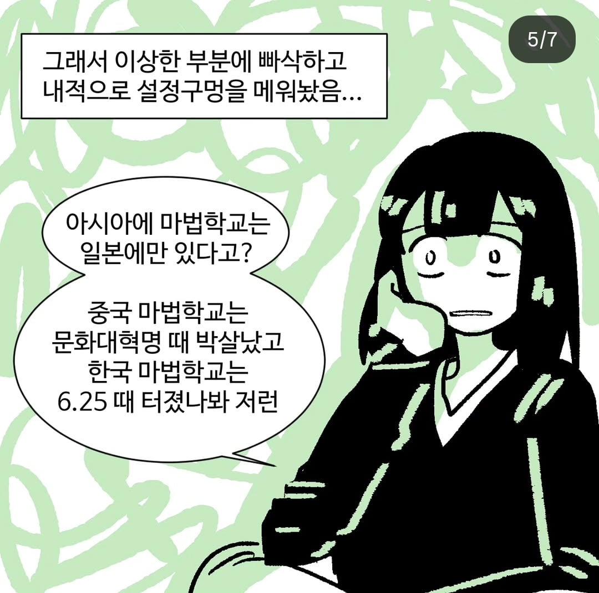

(사실 조앤 롤링은 세계사/세계지리 알못일 뿐이다)

(사실 조앤 롤링은 세계사/세계지리 알못일 뿐이다)
프랑스에 보바통 있잖아
이름부터 루이뷔통 닮지 않음? 비시프랑스 산하 나치부역자 학교일것
비시 보바통!
나치학교는 불가리아에 따로 있잖아 ㅋㅋ
애초에 중국인 캐릭터에게 초챙이라고 이름 지은거 부터가
오 마법부 소속 독립열사
문화혁명이나 625때보단 일본이 한중 침략했을때 몰살시켰지 않을가 그래서 일본만 남았다던가
일본 마법사학교는 교토라서 폭격에서 무사했대
이게 좀 오해인 게 마법 학교가 전 세계에 11개 뿐임.
설정 상 대다수의 마법사들은 홈스쿨링으로 마법을 배우고, 규모가 마법 학교 수준이 아니라서 그렇지 정규 교육 기관이 아니라 소규모 교육 기관 형태로도 존재하는 곳이 있다고는 함.
고로 마법 학교를 세울 정도로 수가 많지 않아서 그렇지 집안 전승이나 소규모 교육 기관 형태로 배운다라 봐야지.
조선시대에 괴력난신이라고 화포로 날려버렸을것
국립이 히로시마에, 사립이 나가사키에 있었음. 지금 없는 이유는.... 알지?
미국 이 자식들 볼드모트의 수하였구나!
이제 알았으면 추천하셈
조선시대에 괴력난신 - 빔을 맞앗다구욧!
영국 전체에 아파트 단지 하나만한 인구로 옘병을 떠는거 자체가...
설정이 존나 허접하긴해
롤링 글마 빙씨 똥때가리다
동양권 마법학교는 어떻게 주문을 외웠을까?
에도시대때 '윙구가르디운 레비오사!' 하진 않았을거고
날아오를 비!
도막사라무
료이키 텐카이
임병투자개진열재전! 급급여율령!
즉시 즉! 죽을 사! 즉사!
중국 어디 구석탱이에 있는게 더 있음직하긴한데
소재지가 히로시마랑 나가사키는 아니었나보네
좀 더 생각해보면 뭐 조선이나 중국쪽에서는 도사라는 존재가 더 크다보니까... 얼추 맞을 수 도..
미국에는 아메리카 원주민 주술도 같이 배우는 마법학교가 있다
즉 일본에 있는 저 학교가 도사들 다니는 학교란것
마법사들이 시대에 뒤쳐지는 거 생각해보면 일본은 메이지 유신처럼 유럽쪽 마법학교 형태를 받아들여서 세운 거고 중국이랑 조선 쪽은 그냥 전통적인 소규모 사제 전승이나 집안 전승 형태로 이루어지고 있을 가능성이 크긴 함.
물론 중국 애들 머리수에 하는 거 보면 문파 같은 거 세워두고 지들끼리 정사 대전 벌여서 소수밖에 안 남았을 가능성도 배제할 수는 없음.
일본은 2차대전때 박살났을건딩
한반도 마법학교는 진작에 화포에 물리쳐졌겠지
일본 마법학교가 제국과 손을 잡고 조선, 중국 마법사들을 몰살했구나

조앤 임마 그냥 운빨로 뜬년이긴함
설정 구멍도 존나게 많고 마법학교 배경으로 그렇게 장편소설을 썻는데 작중 나온 마법주문은 수십종조차 안될수준이며, 그 오랜시간동안 학생들이 무얼 배우는지조차 재대로 정립 안되있음
나중에 체급 커지면서 위자딩월드 ip로 정리하면서 회사가 구멍 메꾸고 한거지 설정 구멍투성이임
애시당초 호그와트 자체도 아일랜드 영국인만 입학가능 조건이 기본으로 깔려있는데 중국계로 보이는 초 챙이 나옴
추측으로는 홍콩 식민지라 영국인인가봄 ㅋㅋ 정도로 추측만 할뿐 임마는 대체 뭔지 재대로 안나옴
그런주제 완결 다 내고 이후에 pc열풍 부니까 거기 탑승해서 페미니즘하다가 욕 존나게 쳐먹고 팬덤사이에서 극혐하는 존재가 됨 ㅋㅋㅋ 해리포터의 원작자이면서 팬들의 증오를 받는 모순된련
입닥치고 거장처럼 무게만 잡아도 다들 빨아줫을텐데 아가리파이팅하고다닌 골빈련
그러면서 정작 얻은건 없는 멍청한련
얻은거 = 막대한 부
그건 해리포터 집필해서 얻은거잔
이후에 pc 페미니즘 아가리파이팅해서 얻은것도 없이 안티만 키웟다는소리한거임
아무 이득도 없이 본인의 멍청한 소신만 씨부리다 안티만 늘어남 ㅋㅋ
인생과 자존심을 내버린 그 고통속에서 얻은게
고작
1조 6천억원 따위...
할만하네씨발
그리고 이 악물고 말포이 영애를 못 본척하는 PC하지 못 한 련…
킹슬리 샤클볼트는 뭘로 봐도 이민자 후손인데 왜 순수혈통인지 얘기도 없음
그 분 이미 돌아가셨답니다
동양 마밥학교는 사실상 마밥천자문이잖아
마법학교가 교토에 있나봐? 도쿄면 대공습 때 불탔을텐데
오가사와라 제도임
우와 핵폭탄도 버티는 일본마법학교 ㄷㄷ
일본 도쿄대공습 히로시마 나가사키!!
어차피 텔레포트 가능해서 지역 문제보단
학교 수가 더 문제 아님?
전세계 학교수 5개 정도 되는거 같던데
그걸로 마법사회가 유지가 된다는게...
일단 설정상 홈스쿨링하는 나라가 더 흔한 걸로 돼있긴 함
조선은 도사 전우치가 있잖아
1스승 1제자 도제식 커리큘럼이라 학교가 없지
구체적으로는 "호그와트와 유사한 학제를 가진 마법학교" 가 저렇다는거고 걍 특정 가문이나 뭐 다른건 알아서 다 있다고 카더라
조선으로 치면, 대학교는 없지만 그에 준하는 성균관은 있는셈?
호그와트가 영국에 있는 이유는 나치가 유럽학교들 다 박살내서 그런가